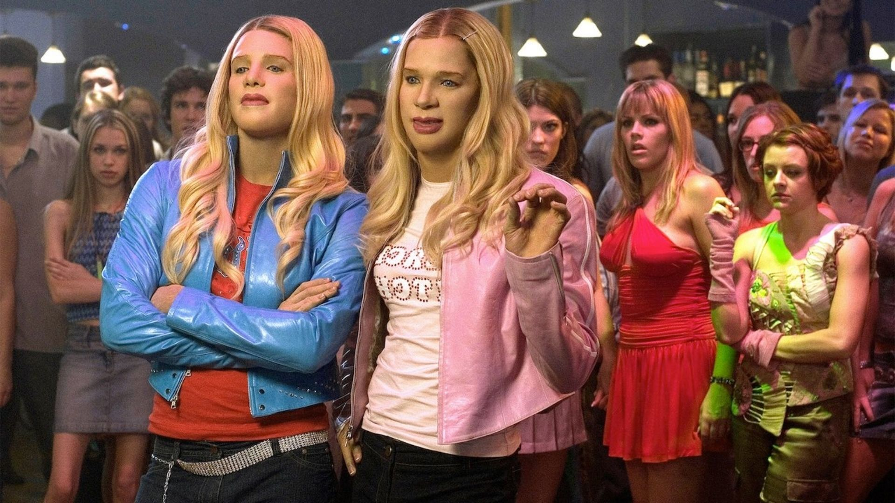
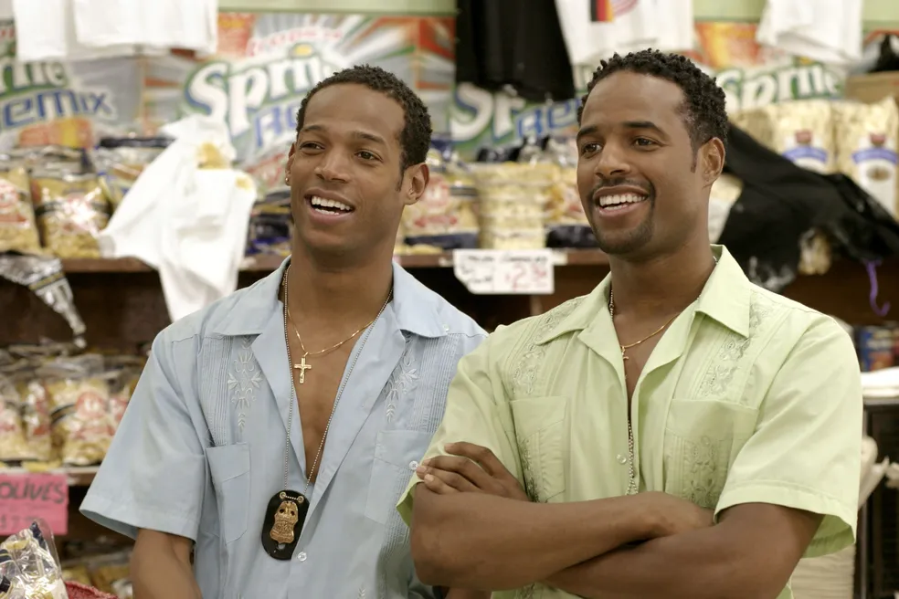

Trailer
Sinopse
Dois agentes do FBI, Marcus (Marlon Wayans) e Kevin Copeland (Shawn Wayans), se disfarçam de irmãs ricas, Brittany e Tiffany Wilson, para protegê-las de um plano de sequestro enquanto elas estão nos Hamptons. Os irmãos precisam manter suas identidades secretas, lidar com as rivais das irmãs Wilson e resolver o caso, tudo isso enquanto tentam se adaptar ao mundo das socialites brancas e ricas, resultando em situações hilárias e constrangedoras.
Elenco
Imagens

